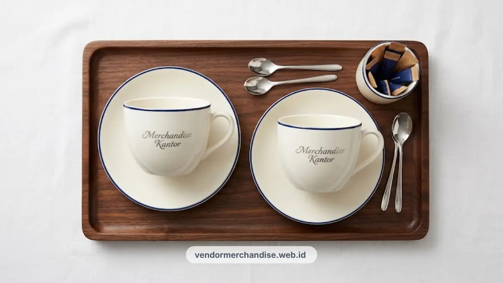

Set cangkir keramik korporat dengan custom logo tersedia untuk kebutuhan penyambutan tamu kantor, cocok untuk perusahaan di Yogyakarta yang ingin memberi kesan hospitality yang hangat.
Fungsi Set Cangkir dalam Menyambut Tamu Kantor
Set cangkir berfungsi sebagai elemen hospitality yang menambah kesan hangat dan profesional saat menyambut tamu di ruang tunggu atau ruang meeting kantor.
Detail kecil seperti cangkir yang digunakan untuk menyajikan minuman kepada tamu sering luput dari perhatian, padahal turut membentuk kesan pertama terhadap kualitas layanan perusahaan. Penyajian minuman yang berkelas ini berpadu serasi dengan hiasan meja kerja seperti jam meja custom logo perusahaan Yogyakarta.
Set cangkir dengan desain rapi dan logo perusahaan yang tercetak jelas dapat memperkuat kesan profesional sekaligus memperlihatkan perhatian perusahaan terhadap detail.
Penggunaan set cangkir yang konsisten pada setiap ruang meeting atau ruang tunggu juga membantu menjaga citra brand yang seragam di mata tamu maupun klien.
Material dan Kapasitas Cangkir yang Cocok untuk Korporat
Material keramik dengan kapasitas sedang umumnya menjadi pilihan yang cocok untuk kebutuhan korporat karena tahan lama dan nyaman digunakan untuk penyajian sehari-hari.
Cangkir keramik dipilih karena permukaannya lebih rapi untuk cetak logo dibandingkan material lain, serta memiliki kesan lebih elegan untuk penyajian di ruang meeting formal, sejalan dengan karakteristik mug keramik custom desain perusahaan.
Kapasitas yang umum digunakan berkisar pada ukuran standar cangkir kopi atau teh, cukup untuk satu kali penyajian tanpa perlu terlalu sering diisi ulang saat pertemuan berlangsung.
Pemilihan bentuk cangkir, baik dengan gagang klasik maupun desain modern tanpa gagang, dapat disesuaikan dengan gaya interior ruang tamu perusahaan. Anda juga dapat memilih opsi set cangkir keramik eksklusif dengan mug pemanas di katalog produk kami.

Ide Kemasan Set Cangkir Keramik Custom Logo
Ide kemasan set cangkir keramik dapat berupa kotak karton custom logo, keranjang anyaman, atau kemasan kayu untuk kesan gift yang lebih premium.
Kemasan kotak karton dengan cetak logo pada bagian luar cocok untuk kebutuhan gift dalam jumlah besar dengan biaya yang lebih efisien. Untuk kebutuhan gift kepada klien atau mitra bisnis penting, kemasan berbahan kayu atau keranjang anyaman dapat memberi kesan yang lebih eksklusif.
Penambahan kartu ucapan atau label kecil dengan nama perusahaan juga dapat melengkapi kemasan agar terlihat lebih personal saat diterima oleh penerima. Inspirasi pengemasan gift set eksklusif ini dapat dilihat melalui panduan welcome box karyawan baru eksklusif.
Kombinasi Set Cangkir dengan Tea Set atau Coffee Set Kantor
Set cangkir dapat dikombinasikan dengan tea set atau coffee set kantor untuk melengkapi kebutuhan penyajian minuman bagi tamu maupun karyawan.
Kombinasi ini biasanya terdiri dari set cangkir, teko kecil, serta nampan penyajian dalam satu paket yang seragam dari segi desain dan warna, seperti pada koleksi tea set perusahaan custom logo untuk ruang meeting.
Paket gabungan seperti ini sering dipilih untuk melengkapi ruang meeting utama atau ruang tunggu direksi, sehingga seluruh elemen penyajian minuman terlihat konsisten dan mendukung kesan profesional perusahaan secara keseluruhan.

Pesan Set Cangkir Keramik Korporat di Vendor Merchandise Kantor
Vendor Merchandise Kantor menyediakan set cangkir keramik korporat dengan custom logo dan pilihan kemasan yang dapat disesuaikan untuk kebutuhan hospitality kantor di Yogyakarta.
Hubungi tim kami sekarang melalui WhatsApp resmi kami atau halaman kontak kami untuk konsultasi desain dan penawaran harga set cangkir keramik korporat perusahaan Anda.